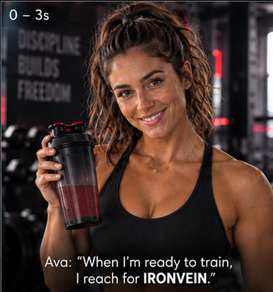
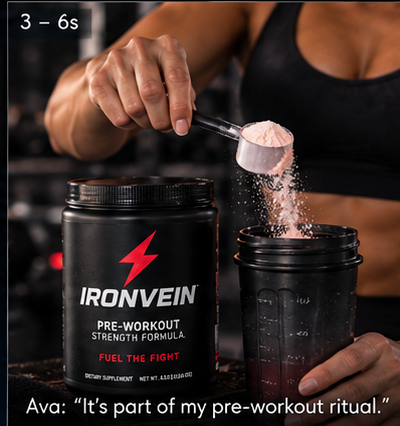
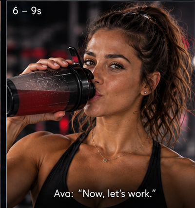
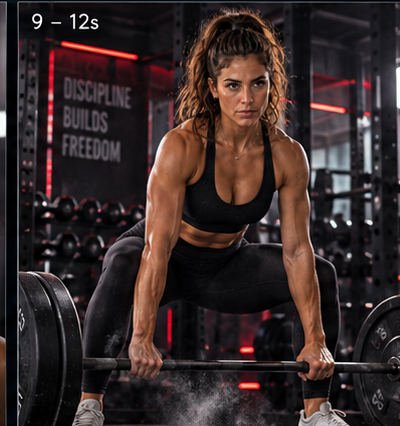
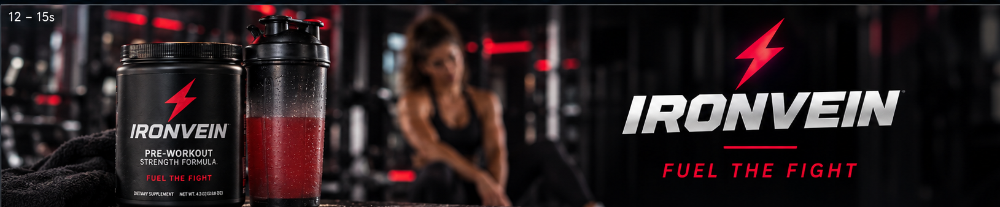

Ready to train.
IRONVEIN turns the pre-workout ritual into a concise performance story: Ava prepares, mixes, drinks and moves.
The visual world is deliberately darker and more aggressive than the wellness campaigns, using an industrial gym, red accents and tactile training detail.
Prepare → fuel → perform.
The reference pack locks Ava, product handling, the shaker, the training moment and the final IRONVEIN hero frame.





Performance with personality.
Ava is both spokesperson and athlete, keeping the product embedded in a believable training ritual.
Direct voice
Ava addresses the viewer directly, giving the commercial an immediate human point of view.
Tactile product
Opening, scooping, mixing and drinking create clear visual beats around the product.
Controlled intensity
Red accents, hard light and gym movement establish a premium performance language.
A short-form performance system.
Creative workflow, clearly documented.
The visual system is documented without guessing at individual model attribution. Exact tools should be confirmed before publication if they are to be named.
Building a performance ad around one hero.
IRONVEIN demonstrates a repeatable commercial structure where spokesperson, product preparation and action all resolve into a strong brand finish.
It provides a useful template for fitness, sports nutrition and performance-lifestyle advertising.